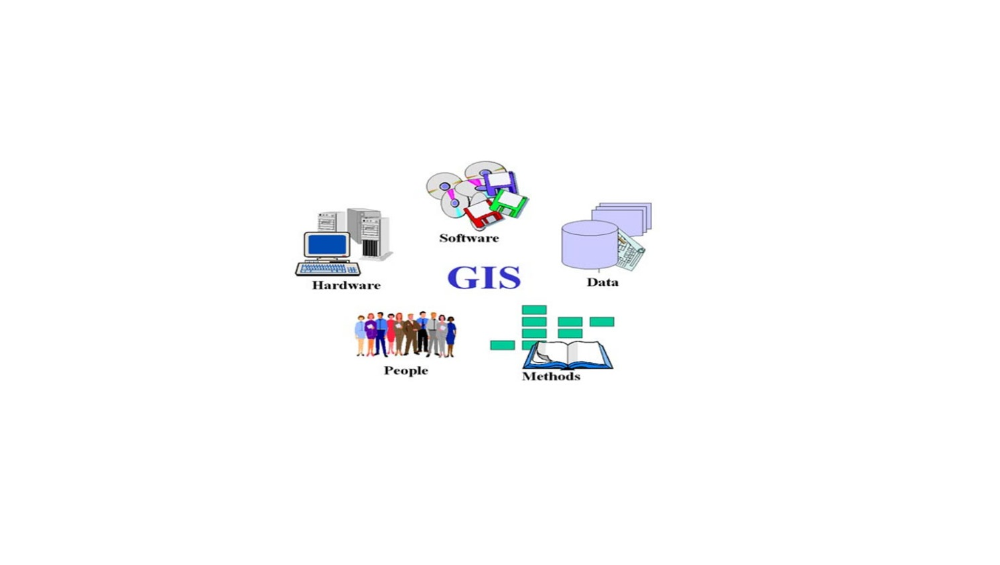

Geographical data: Geographical data includes spatial information, which is represented in maps, aerial photographs, satellite images, digital models of the Earth, and other geographical data. This data is considered essential for building a geographic information system.
Hardware: The hardware used in GIS includes remote sensors, global positioning devices (GPS), computers, and servers. These devices are used to capture, store and analyze geographic data.
Software: GIS software includes programs for analyzing geographical data, managing data, creating maps, and visualizing geographical data. Examples of popular software include ArcGIS, QGIS, and MapInfo.
Processes and Methods: It includes the processes and methods that are used to analyze, transform, manage, and visualize geographic data. These processes include positioning, network analysis, spatial modeling, and geographic visualization.
People: It is considered the most important element in GIS. This component includes professionals and users who analyze, manage, and use geographic data. The use of GIS requires training and skills to understand and use geographic tools and techniques effectively.
The five components of GIS consist of geographic data, hardware, software, processes, and people. These components work together to enable effective analysis and management of geographic data and provide accurate and applicable results in areas as diverse as agriculture, urban planning and natural resource management.
